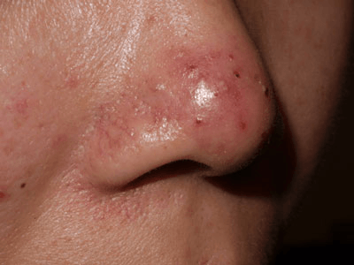

Rosacea is a common rash, found on the central part of the face, usually of a middle-aged person. A tendency to flush easily is followed by persistent redness on the cheeks, chin, forehead and nose, and by crops of small inflamed red bumps and pus spots.

Rosacea does seem to run in some families but it is still not clear whether heredity plays a big part in this.
The skin of the face feels sensitive, and can burn or sting. Flushing (the face becomes bright red) adds to the embarrassment caused by the rash. Be sure to consult your doctor if you have problems with your eyes (see below).
No treatment can be guaranteed to switch rosacea off forever. However long-term treatments control symptoms and can clear the spots. Treatment works best if started when rosacea is at an early stage.
The inflammation that accompanies rosacea can be treated with preparations applied to the skin or taken by mouth; however, these will not help the redness or blushing that may be associated with rosacea.
These are helpful for the inflammatory element of moderate or severe rosacea. The most commonly used antibiotics belong to the tetracycline group and include tetracycline, oxytetracycline, doxycycline, lymecycline and minocycline. Erythromycin is another commonly used antibiotic. The duration of an antibiotic course depends on your response. Your doctor may suggest that you use a topical and oral treatment together.